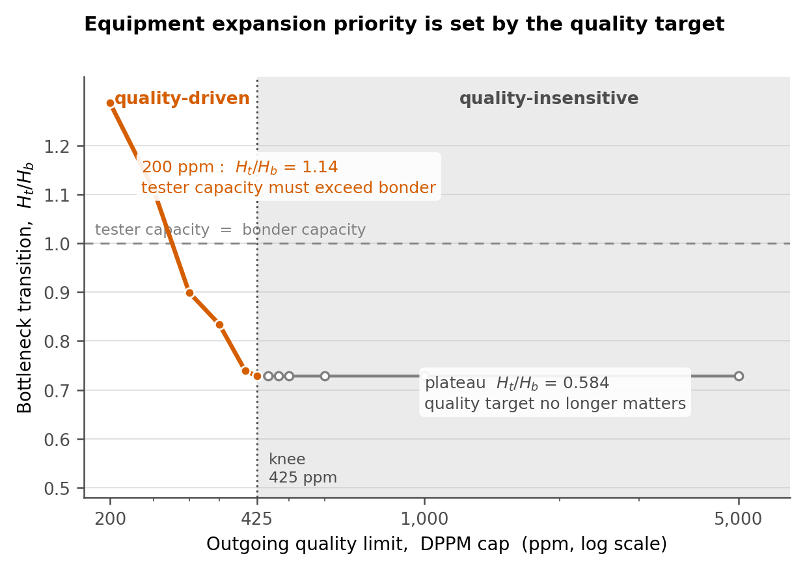
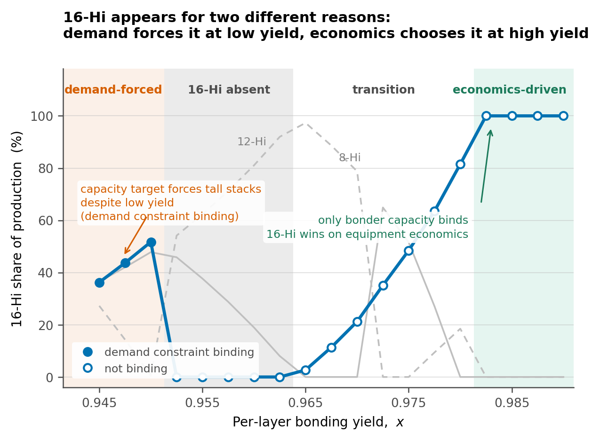
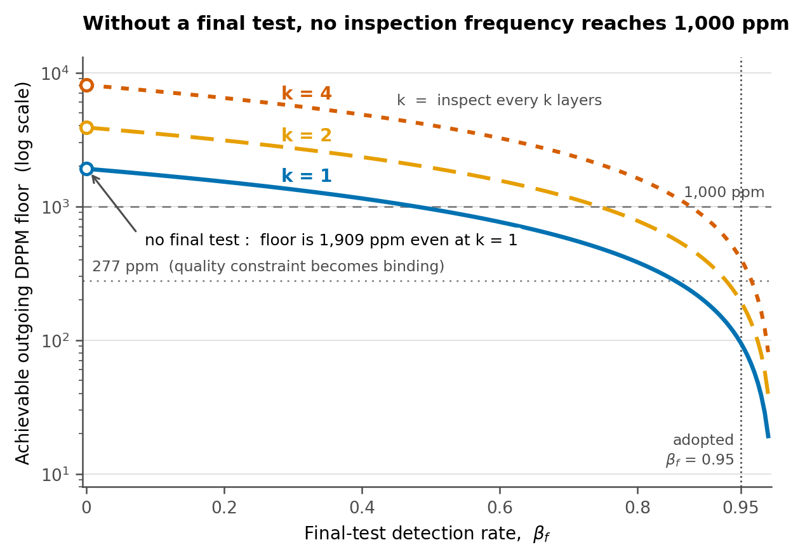

Revision notice (v2, Aug 2026). Following external review, the tester time of the final test is now included in τtest. The number of stacks reaching final test is pship(L,k), so it is not an (L,k)-independent constant. This correction changed the baseline mix, the bottleneck transition ratio and the Monte Carlo distribution, and 8-high stacks disappeared from the optimal mix — their previously unexplained appearance was an artifact of the omitted final-test time. The new parameter φf = tfinal/ttest is unknown, so its baseline is set to the minimum of its distribution (1.0) and the reported effect is treated as a lower bound. In addition, a general closed form for the outgoing DPPM floor and its independence of stack height are derived (Appendix A), and the general expressions are independently verified by event-level Monte Carlo (108 items). Canonical figures: docs/07_Results.md v2.0; review verdicts: notes/12_Review_Response.md.
Abstract—High Bandwidth Memory (HBM) is manufactured by vertically stacking DRAM dies. Capacity grows linearly with the number of layers, but compound yield decays exponentially. Periodic inspection during stacking discards defective stacks early and thereby saves downstream equipment time, yet inspection itself consumes tester time. The established cost-modeling literature for 3D-stacked ICs optimizes cost alone, does not model equipment throughput, treats the number of layers as a given parameter, and is limited to at most five dies because the search space grows as O(Nl2). This report constrains the search structure to layer-wise periodic patterns, which makes 12- to 16-high stacks tractable, and adds bonder and tester throughput constraints together with a stack-height product mix as decision variables in a mixed-integer linear program. Because the absolute values of the equipment and cost coefficients are not public, the input is treated as a parameter space rather than a data set, and conclusions are reported probabilistically through triangular-distribution Monte Carlo sampling. Five results follow. First, the priority for equipment expansion is a function of the outgoing quality target: above a 425 ppm limit the bottleneck transition ratio is pinned at 0.728 and is insensitive to quality, whereas at 200 ppm it rises to 1.287, meaning tester capacity must exceed bonder capacity. Second, 16-high stacks appear for two opposite reasons—customer capacity demand forces them at low yield, while equipment economics selects them at high yield. Third, without a final test no inspection frequency reaches 1,000 ppm; the floor is 1,908.9 ppm. Fourth, when the bonder is the bottleneck the optimal policy is to inspect as often as possible, and the reverse holds when the tester is the bottleneck. Fifth, a global sensitivity analysis (Pearson correlation) shows that stack-height composition is governed by per-layer bonding yield (correlation +0.476) and bottleneck location by the inspection-time ratio (+0.417), while cost coefficients are immaterial (below 0.06).
Index Terms—HBM, 3D stacking, production allocation, mixed-integer linear programming, capacity constraint, inspection period, bottleneck analysis, Monte Carlo, global sensitivity analysis.
Three-dimensional stacking shortens interconnects and raises bandwidth, and HBM is the case in which the technology has settled into volume production. In stacking, however, a single defective die renders the entire stack defective, so increasing the number of layers carries an exponential yield penalty.
Let x denote the per-layer bonding yield and L the number of layers. The compound yield is xL. At x = 0.965 an 8-high stack yields 75.2 %, a 12-high stack 65.2 %, and a 16-high stack 56.5 %. Revenue, in contrast, grows only linearly in L. The structure therefore degrades multiplicatively while improving additively, and stacking as high as possible is not the answer.
Forces in the opposite direction exist simultaneously. Fixed operations before stacking, such as carrier loading and initial alignment, occur once regardless of L and are amortized over more layers as the stack grows. The base die at the bottom of the stack is likewise required exactly once. Finally, the number of HBM sites per GPU is fixed, so a total capacity target imposes a lower bound on L.
The inspection decision is layered on top. Inspecting during stacking allows a defective stack to be discarded early, saving the stacking time, inspection time, and die consumption of all subsequent layers; but inspection occupies the tester. The problem is therefore:
Should a marginal unit of equipment capacity be spent stacking higher, or inspecting more often?
Section II states the motivation and positions the work against prior art. Section III presents the model and Section IV the optimization formulation. Section V discusses the solution method and the alternatives that were rejected. Section VI describes validation and Section VII reports results. Section VIII discusses limitations and Section IX concludes. Appendix A derives the early-discard expectations and Appendix B documents reproduction.
Cost modeling and test-flow optimization for 3D-stacked ICs form an established lineage. The survey is summarized in Table I.
| Area | Status | Representative work |
|---|---|---|
| 3D stacking cost model | Covered | 3D-COSTAR [5]; CATCH [3] |
| Test-flow selection | Covered | Agrawal & Chakrabarty [1] |
| Mid-bond test cost impact | Covered | Taouil et al. [7] |
| Existence of a layer optimum | Covered | [9], [10] |
| Quality–cost trade-off, DPPM | Covered | Taouil et al. [8] |
| D2W cost framework | Covered | Taouil et al. [2] |
| Equipment throughput constraint | Gap | one budget remark (II-C) |
| Stack-height product mix | Gap | — |
| Layer count as decision variable | Gap | — |
| 12- to 16-high tractability | Gap | experiments up to 5 dies |
Agrawal and Chakrabarty demonstrate experimentally that cost per good package dominates total cost as an objective. In a two-die example, using total cost offsets the profit margin per good stack by 2 %, and they note that the loss can grow materially at larger scales.
This report adopts that judgment but makes explicit a condition under which the two objectives become equivalent: namely, when capacity is a hard constraint. This is developed in Section IV-B.
The only place in the lineage where a resource constraint appears is the results section of [1]:
“When we have a limited supply of resources for manufacturing and testing of 3D-Stacked ICs, our approach can be adapted to report an optimal test flow under an additional constraint on the total amount that can spent. The A*-based method can discard nodes with the value of g(n) + h(n) exceeding the available resources.”
This is a budget constraint expressed in currency, not a throughput constraint expressed in time, and it is raised as a possible adaptation rather than implemented. The same paper contains no notion of time at all: it states that “the number of test patterns” is used “as a surrogate measure of test cost.” The chain from test time to equipment occupancy to capacity therefore does not exist in that formulation.
At the end of the same section the authors observe that different manufacturing flows lead to different manufacturing cost and die yield, which in turn affect the optimal test flow, and that to evaluate manufacturing flows together with test flows the selection tool “must be invoked repeatedly.”
This report folds that repeated invocation into a single optimization: the manufacturing-flow choice (stack height) and the test-flow choice (inspection period) are decided inside one objective function.
The position of this work is therefore not that prior work is absent, but that it addresses, from a production-management standpoint, what the prior lineage left open. The imec and TU Delft line concluded that no universal test flow spans all stacked products, and the Duke line concluded that no general rule for cost minimization can be stated. Both left condition-dependent optima as future work.
Following the reference format, given parameters and decision variables are tabulated separately.
| Symbol | Meaning | Value | Grade |
|---|---|---|---|
| L | candidate stack heights | {8, 12, 16} | A |
| k | inspection period (one test per k layers) | {1, 2, 4} | A |
| x | per-layer bonding yield | 0.965 | B |
| β | in-line inspection detection rate | 0.95 | C |
| βf | final-test detection rate | 0.95 | C (inverted) |
| tstack | time to stack one layer | 5.4 s | B |
| a | pre-stack fixed-time ratio, tfix,a/tstack | 3.0 | unknown |
| θ | inspection-time ratio, ttest/tstack | 3.0 | unknown |
| r | revenue per layer (core die cost = 1.0) | 5.0 | unknown |
| cbase | base die cost ratio | 1.5 | unknown |
| cfix,b | post-stack fixed cost (reflow, molding) | 4.5 | unknown |
| ctest | cost per inspection | 0.012 | B |
| c | capacity per layer | 3 GB | A |
| Hb, Ht | bonder / tester available time | ratio ρ | unknown |
| Ds | minimum good capacity of segment s | ≥12-high share 0.70 | B |
| W | wafer die supply | — | unknown |
| Q | outgoing DPPM limit | 200 ppm | unknown |
Grades are A (literature or standard), B (inferred from industry sources), C (assumption), and unknown. Unknown entries are handled as triangular-distribution scenarios in Sections V-D and VII-E.
| Symbol | Meaning |
|---|---|
| q(L, k) | number of stacks started in configuration (L, k) |
| y(L, k) | binary; 1 if period k is selected for height L |
Assumption 1. Per-layer bonding failures are independent and identically distributed with probability (1 − x). The defect-free probability of an L-layer stack is therefore xL.
Assumption 2. The effect of inspection is restricted to early discard. A detected stack is scrapped immediately and incurs no further stacking time, inspection time, or die consumption. Repair and layer redundancy are out of scope.
Rationale. Modeling repair would require process data on which defects are repairable, and no public source provides it. Early discard alone defines the economic value of inspection, and it maps directly onto equipment time.
Assumption 3. In-line inspection follows a layer-wise periodic pattern only—one test every k layers—and exactly one period is chosen per stack height.
Rationale. Production lines inspect on regular patterns of one, two, or four layers depending on the assembly house. Arbitrary combinations of inspection positions are not operable, and running two different periods for the same product for the same reason. The opportunity cost of this restriction is quantified in Section VII-H.
Assumption 4. A single final test after molding always occurs, with detection rate βf.
Rationale. The standard HBM flow comprises an initial wafer-level test, an optional post-stack inspection, and a final test after package assembly. Because the intermediate step is optional, k is a decision variable; because the final test is always performed, βf is a parameter.
Assumption 5. Escapes are shipped and counted in DPPM, but are returned or replaced and therefore not recognized as revenue. This matches the standard treatment of cost of poor quality.
Assumption 6. All output is sold. HBM is in a supply-constrained regime, and this premise justifies the objective chosen in Section IV.
Assumption 7. Mass reflow and molding are low-cost, high-throughput batch operations and are not capacity bottlenecks. Their time is excluded from the capacity constraints and charged to cost only.
Per stack started, the following quantities are computed; the derivation is in Appendix A.
| Symbol | Meaning |
|---|---|
| pgood(L) | defect-free fraction = xL |
| pescape(L,k) | defective but undetected, hence shipped |
| pship(L,k) | pgood + pescape |
| E[layer](L,k) | expected number of layers actually stacked |
| E[test](L,k) | expected number of inspections performed |
| DPPM(L,k) | pescape / pship × 106 |
Key property. pgood does not depend on k. Changing the inspection period leaves the final good count unchanged; what changes is the equipment time and the dies wasted on defective stacks. This is precisely why the early-discard mechanism operates only through equipment time.
For the special case k = 1, β = 1 a closed form exists:
E[layer] = (1 − xL) / (1 − x)At x = 0.965 and L = 16 this gives 12.42, which is 22 % below L. Approximating this quantity by L overestimates the stack-height transition threshold by roughly a factor of four.
Under Assumption 7 the post-stack fixed time tfix,b leaves the capacity constraint and remains only in cost. This does not eliminate the amortization of fixed content; it moves it from the denominator (equipment time) to the numerator (cost). The direction is preserved: the larger the height-independent fixed cost, the more favorable tall stacks become.
The two blocks exchange no data. Each takes the common input (L, k) and computes independently; the coupling function belongs to neither block and lives in a single file. Consequently an unresolved quantity in one block does not propagate to the other. In practice Block Y, the coupling layer, and the scenario analysis were completed while every coefficient in Block T remained unknown.
Total profit is maximized, with Assumption 6 as the premise.
The first formulation used profit per unit of equipment time—the analogue of cost per good package—and linearized it by the Charnes–Cooper transformation. When executed, every capacity constraint returned a shadow price of zero. The cause was not the implementation but the formulation.
A fractional objective is scale-invariant. Against the instruction “maximize profit per hour,” the model’s optimal response is to produce less. There is no incentive to exhaust capacity, so the capacity constraints never bind and bottleneck identification is undefined.
Switching to total profit not only removes the pathology but yields the following:
When a capacity constraint binds, its shadow price is the marginal profit of one second on that equipment.
The per-unit metric therefore need not be imposed as an objective; it emerges as the dual, and the bottleneck is the larger of the two duals. Section VI-B confirms this numerically.
The reference work recommends cost per good package in a setting without capacity constraints and with production volume given. Once capacity is a hard constraint and volume is endogenous, maximizing total profit is maximizing profit per equipment-hour, and that value appears as the dual. This report thus states the condition under which the two objectives coincide.
| Id | Description | Form |
|---|---|---|
| C1-a | bonder throughput | Σ τbond q ≤ Hb |
| C1-b | tester throughput | Σ τtest q ≤ Ht |
| C2 | customer capacity demand | ΣL≥Ls cL pgood q ≥ Ds |
| C3 | wafer supply | Σ (1 + E[layer]) q ≤ W |
| C4 | outgoing quality | Σ (pescape − Q pship) q ≤ 0 |
| — | one period per height | Σk y ≤ 1, q ≤ M y |
Splitting C1 into two constraints is the precondition for bottleneck identification; merging them into a single pool makes the question “which equipment fills first” unanswerable. C4 is fractional in form but becomes linear after multiplying through by the denominator.
The decision variables are continuous quantities q over nine (L, k) configurations plus the binaries y. The big-M for each binary follows naturally from that configuration’s capacity and wafer limits, so no arbitrary constant is introduced. The CBC solver bundled with PuLP is used; one solve takes about 0.06 s.
| Alternative | Reason for rejection |
|---|---|
| A* search | the method of [1]; Assumption 3 already collapses the search space to nine configurations, so a search algorithm is unnecessary |
| Exhaustive enumeration | the baseline [1] rejects as impractical |
| Gurobi | excessive for nine configurations; a commercial license impedes reproduction |
| Charnes–Cooper | obviated by the correction in Section IV-B |
CBC does not return duals while integer variables remain. The inspection-period selection must be fixed and the model re-solved as a pure linear program to obtain shadow prices.
Absolute values of the equipment and cost coefficients are confidential without exception. The input of this study is therefore a parameter space rather than a data set: ranges obtainable from public literature are represented as triangular distributions and 2,000 Monte Carlo draws produce the distribution of conclusions.
The Monte Carlo here concerns parameter uncertainty. Monte Carlo over defect events is not performed, because early discard admits a closed form and simulating it would duplicate the calculation.
| # | Check | Result |
|---|---|---|
| 1 | ranges of probabilities and expectations | pass |
| 2 | identity pgood+pescape+pdiscard=1 | pass |
| 3 | k-invariance of pgood = xL | pass |
| 4 | monotonicity in k | pass |
| 5 | limit x → 1 | pass |
| 6 | limit β → 0 | pass |
| 7 | limit a → 0 favors minimum height | pass |
| 8 | literature reproduction | pass |
| 9 | dimensional consistency | pass |
Since the claimed contribution is the addition of equipment constraints, removing them must reduce the model to the problem solved in prior work. A different answer would indicate either a modeling error or an overstated contribution.
Merging bonder and tester into a single pool and releasing the demand and quality constraints yields an interior optimum at 12 layers with unimodality confirmed, a single-pool shadow price of 0.19096, and a directly computed profit per equipment-second of 0.19096. The dual and the direct computation agree to five decimal places. This confirms the claim of Section IV-B and simultaneously establishes that without a capacity constraint the quantity is undefined.
The stack-height transition threshold a was obtained by two independent routes: a hand calculation using the closed form with cost terms gave 1.39 and 10.26 for the 8→12 and 12→16 transitions, and an MILP limit sweep gave values near 1.4 and 10.5.
The baseline setting is x = 0.965, β = 0.95, βf = 0.95, a = 3, θ = 3, DPPM limit 200 ppm, ≥12-high demand share 0.70, and ρ = Ht/Hb = 0.90.
| Quantity | Value |
|---|---|
| production mix | 12-high k=2 (97.3 %), 16-high k=4 (2.7 %) — no 8-high |
| total profit | 9.4182 × 107 |
| profit per equipment-second | 0.15036 |
| bonder / tester utilization | 62.1 % / 100.0 % |
| bottleneck | tester (dual 0.267173 vs. 0.00000) |
| outgoing DPPM | 200 ppm (binding) |

| DPPM limit | Transition Ht/Hb |
|---|---|
| 200 ppm | 1.2872 |
| 250 ppm | 1.1101 |
| 300 ppm | 0.8995 |
| 400 ppm | 0.7389 |
| ≥ 425 ppm | 0.7284 (flat) |
The curve breaks at 425 ppm into two regimes. If the quality target is looser than 425 ppm, the expansion priority is independent of quality; if tighter, quality determines it, and at 200 ppm tester capacity must exceed bonder capacity. Tightening quality raises inspection load, so the tester saturates first. This statement cannot be derived unless capacity and quality constraints coexist in one model: the prior cost lineage has no capacity, and the capacity literature has no quality.

| Range of x | 16-high share | Binding constraints |
|---|---|---|
| ≤ 0.9500 | 15–44 % | C2 binding — demand forces |
| 0.9525–0.9625 | 0 % | C2 slack — economics cannot justify |
| 0.9650–0.9800 | 3–80 % | transition; binding set varies |
| ≥ 0.9825 | 100 % | C1-a only — economics selects |
The same observation—the presence of 16-high stacks—has opposite causes at the two ends. At low yield the total capacity target must be met even with poor yield; at high yield the demand constraint goes slack and equipment economics alone selects the tall configuration. The interpretation rule that distinguishes these two cases was fixed before execution, so no post-hoc narrative was fitted to the outcome.

With no final test the attainable floor is 1,908.9 ppm; at βf = 0.95 it is 95.6 ppm. Even inspecting at every layer cannot bring outgoing quality below 1,000 ppm in the absence of a final test, because the top k layers have only one inspection opportunity by construction — not because a missed defect stays undetectable, which would contradict the independence assumption (1−β)m. The feasibility floor found by MILP bisection matches the closed-form value to the digits reported, so this is a structural result confirmed on two independent routes rather than a fitted number.
Ten parameters were sampled jointly from triangular distributions over 2,000 draws; 566 draws (28.3 %) were feasible. Infeasibility arises mostly when β or βf is too low to meet 200 ppm.
| Quantity | Median | 90 % interval |
|---|---|---|
| 8-high share | 0.0 % | 0–45.3 % |
| 12-high share | 12.5 % | 0–89.9 % |
| 16-high share | 70.4 % | 4.1–100 % |
| profit per equipment-second | 0.1440 | 0.0708–0.2610 |
| P(bottleneck = tester) | 약 87 % | |
The confidence interval on stack-height share spans zero to one hundred percent, so the statement “the optimum is 12-high” cannot be asserted. The bottleneck, by contrast, is the tester with roughly 72 % probability. The asymmetry itself is a result.
| Parameter | 16-high share | profit/s | tester bottleneck |
|---|---|---|---|
| x | +0.415 | +0.314 | −0.016 |
| θ | +0.240 | −0.319 | +0.311 |
| φf | +0.197 | −0.035 | +0.160 |
| β | +0.154 | −0.037 | −0.088 |
| cfix,b | +0.056 | +0.039 | −0.059 |
| ρ | −0.044 | −0.167 | −0.111 |
| βf | +0.023 | +0.054 | −0.219 |
| a | +0.021 | −0.080 | −0.152 |
| r | −0.007 | +0.739 | −0.062 |
| cbase | +0.005 | −0.083 | −0.022 |
| ctest | +0.000 | +0.045 | −0.135 |
To decide the stack-height composition, per-layer bonding yield x must be measured most accurately (+0.476); cost coefficients may be off by 50 % without changing the conclusion. To decide which equipment to add, the inspection-time ratio θ must be measured most accurately (+0.417)—more than twice as important as the capacity ratio ρ itself.
Caution. The +0.741 correlation of r with profit carries no information value: r is a revenue scale parameter, so proportionality is trivial, and its correlation with stack-height composition is −0.073, effectively zero. Correlations that do not change a decision must be excluded from a sensitivity reading.
The low correlation of βf is likewise part of the conclusion. Combined with Section VII-D: the existence of a final test is decisive, while the precision of its detection rate is not. The evidence for the first clause is the inversion table, and for the second the Monte Carlo; the two sources must not be conflated.
Activating one constraint at a time reverses the optimal inspection period: with only C1-a active the optimum is k = 1 (100 %), and with only C1-b active it is k = 4 (100 %).
When the bonder is the bottleneck, inspect as often as possible; when the tester is the bottleneck, as rarely as possible.
If the bonder is the bottleneck, tester time is effectively free, so frequent inspection that discards defects early and saves bonder time is a net gain. If the tester is the bottleneck, inspection itself consumes the scarce resource. This is direct evidence that the early-discard mechanism of Assumption 2 operates, reproduced at the limits.
| Active constraints | Height allocation | Kinds |
|---|---|---|
| C3 only | 12-high 100 % | 1 |
| C4 only | 12-high 100 % | 1 |
| C2 only | 12-high 100 % | 1 |
| C1-a + C1-b | 12-high 58 %, 16-high 42 % | 2 |
| C1-a + C1-b + C4 | 8/12/16-high 48/20/32 % | 3 |
The number of distinct products cannot exceed the number of simultaneously binding constraints. The backbone of the mix is the joint binding of the two capacity constraints, whereas C4 constrains the inspection period. This is the mirror image of the property in Section III-C: DPPM is determined by k, not by L; correspondingly C4 restricts k, not L.
Releasing the single-period restriction of Assumption 3 so that a 12-high stack may carry both k = 2 and k = 4 makes the 16-high configuration disappear, replaced by 12-high with k = 4 (observed only when C4 is slack; at the baseline the two cases coincide and the profit gap is +0.000 %).
Diversifying stack height and diversifying inspection period are substitutes for one another.
If a 12-high stack can carry two periods, the 16-high configuration is unnecessary; if it cannot, the 16-high configuration takes over that role. The observation is available only because height and inspection are decided jointly, and it does not appear in prior work. At the corrected baseline the opportunity cost is 0.000 %—the two settings give the identical solution. The earlier figures (+0.11 % / +1.43 %) were obtained at φf = 0 and are withdrawn. Moreover only periods, not non-uniform positions, were tested; Appendix A shows the latter is the real direction of improvement.
A per-layer price premium for taller stacks was tested as a scenario. The optimal mix is unchanged up to a 15 % premium on 16-high and first inverts at 25 %. Since observed evidence lies in the 5–15 % range, this falsifiability is reported as evidence of robustness rather than as a limitation.
The coefficients a, θ, r, cbase and cfix,b have no public absolute values and are handled as triangular scenarios. β is taken from a general chiplet-coverage study rather than HBM measurement. βf is confirmed to exist by the literature but its value is inverted from the model. The industry outgoing DPPM target could not be obtained. The mechanism by which 8-high stacks enter the mix remains unexplained.
Two literature searches for θ and a failed to obtain absolute values. The tester UPH formula and parallel site counts were found, but soak, test, and index times were not, so inversion does not close. A by-product was nevertheless obtained: the internal composition of tstack decomposes into 2–3 s of fine alignment and a 3–8 s thermocompression cycle, whose sum independently supports the 5.4 s baseline.
The outgoing DPPM of this model counts undetected bonding defects only, whereas industry DPPM includes die-level defects, early reliability failures, and parametric drift; the model value is therefore a subset. In addition, no public HBM outgoing DPPM target was obtained, so the denominator convention (per stack or per die) could not be confirmed. The comparison was therefore not performed. Declining to present an unsupported comparison is the honest treatment.
| Statement | Condition |
|---|---|
| “β ≤ 0.88 is infeasible even at k=1” | βf=0.95, limit 200 ppm |
| “over half of parameter draws are infeasible” | same, plus β, βf distributions |
| “baseline mix is 8k2 + 12k2 + 16k4” | ≥12-high demand share 0.70 |
| “height allocation in the transition band” | under Assumption 3 |
The statement “the optimal stack height is 12” cannot be made: the 90 % Monte Carlo interval spans zero to one hundred percent. This is not a defect but a consequence of the design in Section V-D. What the study offers instead is the set of threshold conditions at which the answer flips.
Three errors were found and corrected during the work. Only the corrected forms appear above, but each carries a methodological lesson.
A mixed-integer linear program was presented that jointly determines the HBM stack-height mix and the layer-wise inspection period under assembly and test throughput constraints. In contrast to the prior lineage, which addresses cost alone and treats the layer count as given, the bonder and tester are modeled as separate resources and the layer count is promoted to a decision variable.
No general rule for the optimal stack height can be stated, because the optimum depends on the interplay of parameter values—the same conclusion reached by the reference work. What this study can state are the threshold conditions at which the answer changes:
A global sensitivity analysis further separated which parameters must be measured accurately from those for which estimates suffice. Converting the absence of data into the conclusion “what must be measured” is the methodological contribution.
Future work. Allocating investment between in-line and final inspection—a two-dimensional optimization over β and βf—was not attempted, because with both parameters unknown it would amount to constructing an unfounded axis. Discrete-event simulation of line dynamics is likewise out of scope.
For an L-layer stack the probability that the first defect occurs at layer i is xi−1(1 − x). Inspections occur at layers k, 2k, …, L, and a defect at layer i is detected with probability β at each inspection point at or beyond i.
Let the index of the first eligible inspection point be ⌈i/k⌉. The number of remaining opportunities is m = L/k − ⌈i/k⌉ + 1. Detection at the j-th opportunity has probability (1 − β)j−1β, at which point (⌈i/k⌉ + j − 1)k layers have been stacked. All m opportunities are missed with probability (1 − β)m, in which case the stack reaches L layers and becomes an escape. Hence
E[layer] = xLL + Σi xi−1(1−x) [ Σj (1−β)j−1β(⌈i/k⌉+j−1)k + (1−β)mL ]E[test] follows from the same branching with the stacked layer count divided by k.
Special case. For k = 1 and β = 1 every defect is detected on occurrence, so E[layer] = (1 − xL)/(1 − x), the truncated expectation of trials until first failure. At x = 0.965 this equals 7.09, 9.94, and 12.42 for L = 8, 12, 16.
Final test. Under Assumption 4 escapes are additionally detected with probability βf, so the shipped undetected fraction is pescape(1 − βf). Because the final test is applied to every completed stack, it is a fixed component independent of (L, k): it adds a constant to the objective and does not change the optimum. It is therefore charged to escapes only and not to time or cost.
Installing the two dependencies and running python src/run_all.py executes a ten-stage pipeline in about four minutes and regenerates every artifact under data/ and figures/. The linear-programming solver is the CBC binary bundled with PuLP, so no separate installation is required. The stages are: validation and threshold computation; the coupled MILP with checks 7–9; scenarios and Monte Carlo; the DPPM-limit sweep; demand-segment inversion; bottleneck bisection; the transition curve; the yield sweep; figure generation; and automated figure inspection. Individual falsification scripts are excluded from the pipeline and run on demand.